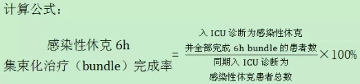

定义：感染性休克6h集束化治疗（bundle），是指在3h集束化治疗（bundle）的基础上加上：低血压对目标复苏效果差立即予以升压药；脓毒症休克或乳酸≥4mmol/L容量复苏后仍持续低血压，需立即测量CVP 和 ScvO2；初始乳酸高于正常患者需重复测量乳酸水平。感染性休克6h集束化治疗（bundle）完成率，是指入ICU诊断为感染性休克全部完成6hbundle的患者数占同期入ICU诊断为感染性休克患者总数的比例。不包括住ICU期间后续新发生的感染性休克病例。

意义：反映感染性休克的治疗规范性及诊疗能力。